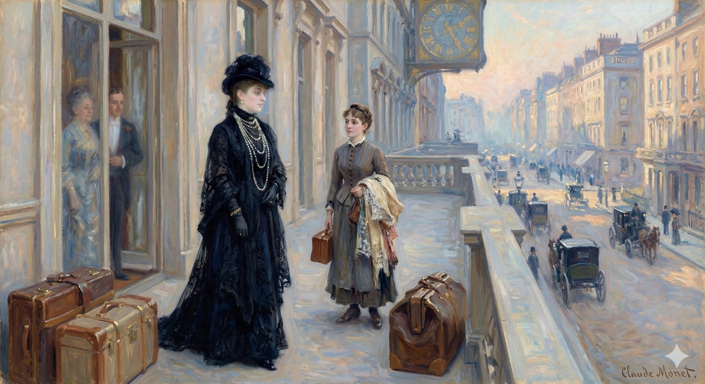

In this chapter, Milly Theale and Susan Shepherd adjust to a new "independence" regarding Milly's health, followed by Milly’s final visit to Sir Luke Strett before leaving London.Key actions and internal developments include:A Shift in the Domestic Dynamic: Following Susan's encounter with Sir Luke, an "odd independence" arises between the two women. Milly encourages Susan to have her own private meetings with the doctor, while Milly herself resolves to proceed as if nothing were wrong, adopting a policy of "saving him alarms about her subtlety".The Physician/Patient Reversal: During her visit, Milly experiences a "lift of feeling" similar to her previous talk with Susan. She decides to "help him to help her" by remaining simple and easy to treat, effectively reversing their roles so that she becomes the one looking after his comfort.Sir Luke’s Observations: Sir Luke notes that Milly looks "remarkably well". While he acknowledges she is "extremely difficult to treat" and requires all his wit, he encourages her to "go on" and enjoy the "beautiful show" of life.Plans for Venice: Milly confirms her departure for the Tyrol and Venice. Sir Luke reveals he also plans to be in Venice in October with his niece, promising a future meeting.The "Widows and Orphans" Party: Milly describes her traveling party—herself, Susan, and Kate Croy—as "widows and orphans". She admits to Sir Luke that Merton Densher may also be in Venice.Maintaining the Deception: Milly continues the "proper lie" established by Maud and Kate, telling Sir Luke that Densher "follows" Kate because he is a lover whose feelings are not returned. She tells the doctor that she takes an interest in Densher and hopes there is a "chance for him" with Kate.A Final Plea: As she departs, Milly repeatedly asks Sir Luke to "keep me" all right. When he offers to do anything he can for her "friend" (Densher), she pensively concludes that there is "really nothing one can do".
It had at least made the difference for them, they could feel, of an informed state in respect to the great doctor, whom they were now to take as watching, waiting, studying, or at any rate as proposing to himself some such process before he should make up his mind. Mrs. Stringham understood him as considering the matter meanwhile in a spirit that, on this same occasion, at Lancaster Gate, she had come back to a rough notation of before retiring. She followed the course of his reckoning. If what they had talked of could happen—if Milly, that is, could have her thoughts taken off herself—it wouldn't do any harm and might conceivably do much good. If it couldn't happen—if, anxiously, though tactfully working, they themselves, conjoined, could do nothing to contribute to it—they would be in no worse a box than before. Only in this latter case the girl would have had her free range for the summer, for the autumn; she would have done her best in the sense enjoined on her, and, coming back at the end to her eminent man, would—besides having more to show him—find him more ready to go on with her. It was visible further to Susan Shepherd—as well as being ground for a second report to her old friend—that Milly did her part for a working view of the general case, inasmuch as she mentioned frankly and promptly that she meant to go and say good-bye to Sir Luke Strett and thank him. She even specified what she was to thank him for, his having been so easy about her behaviour.
It had at least made a difference for them, they could feel: they were now informed about the great doctor, who they believed was observing, waiting, studying, or at least considering the situation before making a decision. Mrs. Stringham understood that he was contemplating the matter, something she had roughly outlined in her notes at Lancaster Gate before going to bed. She understood his reasoning. If what they had discussed could happen—if Milly could stop dwelling on her own situation—it wouldn't hurt and might even help a lot. If it couldn't happen—if they, working together anxiously but tactfully, couldn't contribute to it—they'd be no worse off. But in that case, the girl would have had freedom during the summer and autumn; she would have done her best, and, returning to her doctor, would have more to show him and he might be more willing to continue helping her. Susan Shepherd also saw—and this gave her a second reason to report to her friend—that Milly was cooperating with the plan, because she mentioned openly and immediately that she intended to go and say goodbye and thank Sir Luke Strett. She even said what she would thank him for: being so easygoing about her behavior.
"You see I didn't know that—for the liberty I took—I shouldn't afterwards get a stiff note from him."
I didn't realize that my actions would lead to him sending me a formal and angry letter.
So much Milly had said to her, and it had made her a trifle rash. "Oh you'll never get a stiff note from him in your life."
Milly had said so much to her, and it had made her a little reckless. "Oh, you'll never get a formal or cold letter from him, ever."
She felt her rashness, the next moment, at her young friend's question. "Why not, as well as any one else who has played him a trick?"
She immediately regretted her boldness after her young friend asked, "Why shouldn't I, just like anyone else who's played a trick on him?"
"Well, because he doesn't regard it as a trick. He could understand your action. It's all right, you see."
Well, he doesn't think it's a trick. He'd understand what you did. It's okay, you know.
"Yes—I do see. It is all right. He's easier with me than with any one else, because that's the way to let me down. He's only making believe, and I'm not worth hauling up."
Yes, I understand. It's okay. He's more relaxed with me than with anyone else because he's trying to let me off easy. He's just pretending, and I'm not worth the effort of trying to help.
Rueful at having provoked again this ominous flare, poor Susie grasped at her only advantage. "Do you really accuse a man like Sir Luke Strett of trifling with you?"
Feeling sorry that she'd stirred up this angry outburst again, poor Susie clung to her only way out. "Are you seriously accusing a man like Sir Luke Strett of playing around with you?"
She couldn't blind herself to the look her companion gave her—a strange half-amused perception of what she made of it. "Well, so far as it's trifling with me to pity me so much."
She couldn't ignore the look her companion gave her—a strange, slightly amused assessment of her reaction. "Well, it seems like you're playing with me by feeling so sorry for me."
"He doesn't pity you," Susie earnestly reasoned. "He just—the same as any one else—likes you."
"He doesn't feel sorry for you," Susie said seriously. "He just—like everyone else—is attracted to you."
"He has no business then to like me. He's not the same as any one else."
He shouldn't like me then. He's different from everyone else.
"Why not, if he wants to work for you?"
Why not, if he's willing to work for you?
Milly gave her another look, but this time a wonderful smile. "Ah there you are!" Mrs. Stringham coloured, for there indeed she was again. But Milly let her off. "Work for me, all the same—work for me! It's of course what I want." Then as usual she embraced her friend. "I'm not going to be as nasty as this to him."
Milly looked at her again, but this time with a lovely smile. "Oh, there you are!" Mrs. Stringham blushed, because there she was, standing right there again. But Milly let it go. "You'll still work for me – work for me! That’s what I want, of course." Then, as usual, she hugged her friend. "I'm not going to be as mean to him as this."
"I'm sure I hope not!"—and Mrs. Stringham laughed for the kiss. "I've no doubt, however, he'd take it from you! It's you, my dear, who are not the same as any one else."
"I really hope not!"—and Mrs. Stringham
laughed before the kiss. "But I'm sure he'd let you do it!
You, my dear, are just different from everyone else."
Milly's assent to which, after an instant, gave her the last word. "No, so that people can take anything from me." And what Mrs. Stringham did indeed resignedly take after this was the absence on her part of any account of the visit then paid. It was the beginning in fact between them of an odd independence—an independence positively of action and custom—on the subject of Milly's future. They went their separate ways with the girl's intense assent; this being really nothing but what she had so wonderfully put in her plea for after Mrs. Stringham's first encounter with Sir Luke. She fairly favoured the idea that Susie had or was to have other encounters—private pointed personal; she favoured every idea, but most of all the idea that she herself was to go on as if nothing were the matter. Since she was to be worked for that would be her way; and though her companions learned from herself nothing of it this was in the event her way with her medical adviser. She put her visit to him on the simplest ground; she had come just to tell him how touched she had been by his good nature. That required little explaining, for, as Mrs. Stringham had said, he quite understood he could but reply that it was all right.
Milly agreed to this, and after a moment, she had the final say. "No, so people can't take advantage of me." And what Mrs. Stringham did take, with resignation, was that Milly never spoke about that visit. This was really the start of their unusual independence – an independence in their actions and habits – regarding Milly's future. They went their separate ways, with Milly's strong agreement. This was essentially what she'd asked for when she pleaded her case after Mrs. Stringham first met Sir Luke. She actually liked the idea that Susie had, or would have, other private, personal encounters; she liked all the ideas, but most of all the idea that she herself could continue as if nothing was wrong. Since others would be taking care of her, that would be her approach. Although her companions never learned anything about it from her, this was her approach with her doctor. She explained her visit to him in the simplest terms; she had come just to tell him how grateful she was for his kindness. That didn't require much explanation, because, as Mrs. Stringham had said, he understood completely and simply replied that everything was fine.
"I had a charming quarter of an hour with that clever lady. You've got good friends."
I really enjoyed talking with that smart woman. You have great friends.
"So each one of them thinks of all the others. But so I also think," Milly went on, "of all of them together. You're excellent for each other. And it's in that way, I dare say, that you're best for me."
So, they're all thinking about each other. But," Milly continued, "I'm also thinking about you all, as a group. You're perfect for each other. And honestly, I think that's how you're best for me."
There came to her on this occasion one of the strangest of her impressions, which was at the same time one of the finest of her alarms—the glimmer of a vision that if she should go, as it were, too far, she might perhaps deprive their relation of facility if not of value. Going too far was failing to try at least to remain simple. He would be quite ready to hate her if she did, by heading him off at every point, embarrass his exercise of a kindness that, no doubt, rather constituted for him a high method. Susie wouldn't hate her, since Susie positively wanted to suffer for her; Susie had a noble idea that she might somehow so do her good. Such, however, was not the way in which the greatest of London doctors was to be expected to wish to do it. He wouldn't have time even should he wish; whereby, in a word, Milly felt herself intimately warned. Face to face there with her smooth strong director, she enjoyed at a given moment quite such another lift of feeling as she had known in her crucial talk with Susie. It came round to the same thing; him too she would help to help her if that could possibly be; but if it couldn't possibly be she would assist also to make this right.
On this occasion, she had a very unusual feeling, but it also made her uneasy. She had a sudden understanding that if she pushed things too far, she might complicate their relationship, or even lessen its importance. "Going too far" meant not at least trying to keep things simple. He might become annoyed with her if she overstepped boundaries and hindered his ability to show her kindness, which was probably a source of satisfaction for him. Susie wouldn't dislike her, because Susie genuinely wanted to sacrifice for her and believed she could help. But that's not how this prominent London doctor would approach things. He wouldn't have the time, even if he wanted to. In short, Milly knew instinctively what she needed to do. Sitting there with this calm, capable doctor, she had a similar rush of emotion to what she'd felt in her important conversation with Susie. It boiled down to the same thing: she would help him help her if at all possible; but if that wasn't possible, she would still help to make everything work out.
It wouldn't have taken many minutes more, on the basis in question, almost to reverse for her their characters of patient and physician. What was he in fact but patient, what was she but physician, from the moment she embraced once for all the necessity, adopted once for all the policy, of saving him alarms about her subtlety? She would leave the subtlety to him: he would enjoy his use of it, and she herself, no doubt, would in time enjoy his enjoyment. She went so far as to imagine that the inward success of these reflexions flushed her for the minute, to his eyes, with a certain bloom, a comparative appearance of health; and what verily next occurred was that he gave colour to the presumption. "Every little helps, no doubt!"—he noticed good-humouredly her harmless sally. "But, help or no help, you're looking, you know, remarkably well."
It wouldn't have taken much longer, under the circumstances, for her to almost switch roles with him, turning him into the patient and her into the doctor. Really, from the moment she accepted she had to avoid upsetting him with her cleverness, what was he but the patient, and what was she but the doctor? She decided to spare him her complex thoughts; he could have fun figuring things out for himself, and she imagined she would eventually enjoy seeing him enjoy it. She even thought the secret satisfaction of this plan briefly made her look healthier and more vibrant. And in fact, he seemed to confirm her idea. "Every little bit helps, I guess!" he said, amused by her innocent comment. "But, help or no help, you're looking, you know, remarkably well."
"Oh I thought I was," she answered; and it was as if already she saw his line. Only she wondered what he would have guessed. If he had guessed anything at all it would be rather remarkable of him. As for what there was to guess, he couldn't—if this was present to him—have arrived at it save by his own acuteness. That acuteness was therefore immense; and if it supplied the subtlety she thought of leaving him to, his portion would be none so bad. Neither, for that matter, would hers be—which she was even actually enjoying. She wondered if really then there mightn't be something for her. She hadn't been sure in coming to him that she was "better," and he hadn't used, he would be awfully careful not to use, that compromising term about her; in spite of all of which she would have been ready to say, for the amiable sympathy of it, "Yes, I must be," for he had this unaided sense of something that had happened to her. It was a sense unaided, because who could have told him of anything? Susie, she was certain, hadn't yet seen him again, and there were things it was impossible she could have told him the first time. Since such was his penetration, therefore, why shouldn't she gracefully, in recognition of it, accept the new circumstance, the one he was clearly wanting to congratulate her on, as a sufficient cause? If one nursed a cause tenderly enough it might produce an effect; and this, to begin with, would be a way of nursing. "You gave me the other day," she went on, "plenty to think over, and I've been doing that—thinking it over—quite as you'll have probably wished me. I think I must be pretty easy to treat," she smiled, "since you've already done me so much good."
"Oh, I thought I was," she replied, and it was like she already knew what he was thinking. She just wondered what he had figured out. It would be pretty impressive if he had figured anything out at all. As for what there was to figure out, he couldn't have known—if he even had an inkling—unless he was incredibly sharp. If he was that sharp, and if that's the kind of subtle challenge she was considering leaving him with, he wouldn't be in a bad position. Actually, neither would she be—and she was even enjoying it. She wondered if there might actually be something in it for her. She wasn't sure when she came to him that she was "better," and he hadn't used, and he would be very careful not to use, that loaded word about her. Despite all that, she would have been happy to say, just for the sake of being agreeable, "Yes, I must be," because he seemed to have sensed something that had happened to her without anyone telling him. It was a completely intuitive sense, because who could have told him anything? She was sure Susie hadn't seen him again yet, and there were things that were impossible for her to have told him the first time. Since he was so perceptive, then why shouldn't she gracefully accept the new situation, the one he clearly wanted to congratulate her on, as a good enough reason? If you nurtured a cause carefully enough, it might produce a result; and this, to begin with, would be a way to nurture it. "You gave me a lot to think about the other day," she continued, "and I have been doing that—thinking it over—just like you probably wanted me to. I think I must be pretty easy to handle," she smiled, "since you've already done me so much good."
The only obstacle to reciprocity with him was that he looked in advance so closely related to all one's possibilities that one missed the pleasure of really improving it. "Oh no, you're extremely difficult to treat. I've need with you, I assure you, of all my wit."
The only problem with being friends with him was that he seemed to fit into your life so perfectly already, that you lost the fun of actually working on the friendship. "Oh no, you're incredibly hard to deal with. I swear, I need to use all my intelligence just to be around you."
"Well, I mean I do come up." She hadn't meanwhile a bit believed in his answer, convinced as she was that if she had been difficult it would be the last thing he would have told her. "I'm doing," she said, "as I like."
"Well, I guess I do visit." She hadn't believed a word of his response, because she was sure that if she'd been difficult, he'd be the last person to admit it. "I'm doing whatever I want," she said.
"Then it's as I like. But you must really, though we're having such a decent month, get straight away." In pursuance of which, when she had replied with promptitude that her departure—for the Tyrol and then for Venice—was quite fixed for the fourteenth, he took her up with alacrity. "For Venice? That's perfect, for we shall meet there. I've a dream of it for October, when I'm hoping for three weeks off; three weeks during which, if I can get them clear, my niece, a young person who has quite the whip hand of me, is to take me where she prefers. I heard from her only yesterday that she expects to prefer Venice."
"Great, that works for me. But you really need to go, even though things are going well for us right now, get going right away." And when she quickly confirmed that her trip – to the Tyrol and then Venice – was definitely set for the fourteenth, he excitedly replied, "Venice? That's perfect, because we'll see each other there. I've been dreaming about it for October, when I hope to have three weeks free. Three weeks where, if I can arrange it, my niece, a young woman who basically bosses me around, will take me wherever she wants. She told me just yesterday that she's planning to go to Venice."
"That's lovely then. I shall expect you there. And anything that, in advance or in any way, I can do for you—!"
Great! I'll see you there. And let me know if there's anything I can do for you beforehand, or if you need anything at all!
"Oh thank you. My niece, I seem to feel, does for me. But it will be capital to find you there."
Oh, thank you. I think my niece will take care of it for me. But it will be wonderful to see you there.
"I think it ought to make you feel," she said after a moment, "that I am easy to treat."
"I hope it makes you feel," she said after a pause, "that I'm easy to get along with."
But he shook his head again; he wouldn't have it. "You've not come to that yet."
But he shook his head again; he refused.
"You're not ready for that."
"One has to be so bad for it?"
"Is it really that difficult?"
"Well, I don't think I've ever come to it—to 'ease' of treatment. I doubt if it's possible. I've not, if it is, found any one bad enough. The ease, you see, is for you."
Well, I don't think I've ever found treatment easy. I doubt that's even possible. If it is, I haven't met anyone who's had it that way. You're the one who's supposed to find it easy, you see.
"I see—I see."
"I understand."
They had an odd friendly, but perhaps the least bit awkward pause on it; after which Sir Luke asked: "And that clever lady—she goes with you?"
They shared a strange, friendly, but slightly awkward silence. Then Sir Luke asked, "And that intelligent woman – is she with you?"
"Mrs. Stringham? Oh dear, yes. She'll stay with me, I hope, to the end."
Mrs. Stringham? Oh, definitely. I hope she stays with me until she dies.
He had a cheerful blankness. "To the end of what?"
He looked cheerfully clueless. "To what end are you talking about?"
"Well—of everything."
Basically, everything.
"Ah then," he laughed, "you're in luck. The end of everything is far off. This, you know, I'm hoping," said Sir Luke, "is only the beginning." And the next question he risked might have been a part of his hope. "Just you and she together?"
"Well then," he laughed, "you're in luck. The end
of everything is a long way off. This, I hope,"
said Sir Luke, "is just the beginning." And
the next question he asked might have been related to
what he was hoping for. "Just you and her?"
"No, two other friends; two ladies of whom we've seen more here than of any one and who are just the right people for us."
No, two other friends; two women we've seen more of here than anyone else, and they're perfect for us.
He thought a moment. "You'll be four women together then?"
He paused, thinking. "So, you'll all be together as four women?"
"Ah," said Milly, "we're widows and orphans. But I think," she added as if to say what she saw would reassure him, "that we shall not be unattractive, as we move, to gentlemen. When you talk of 'life' I suppose you mean mainly gentlemen."
"Oh," Milly said, "we're the vulnerable ones, the ones left behind.
But I think," she added, as if to calm him down, "we'll still be appealing to men, as we go about our lives. When you talk about 'life,' I guess you mostly mean men, right?"
"When I talk of 'life,'" he made answer after a moment during which he might have been appreciating her raciness—"when I talk of life I think I mean more than anything else the beautiful show of it, in its freshness, made by young persons of your age. So go on as you are. I see more and more how you are. You can't," he went so far as to say for pleasantness, "better it."
"When I say 'life'," he replied after a pause, maybe checking her out, "I think I'm mostly talking about the amazing spectacle of it, the vibrancy created by young people like you. So, keep doing what you're doing. I'm starting to understand you more and more. You really can't," he added jokingly, "improve on it."
She took it from him with a great show of peace. "One of our companions will be Miss Croy, who came with me here first. It's in her that life is splendid; and a part of that is even that she's devoted to me. But she's above all magnificent in herself. So that if you'd like," she freely threw out, "to see her—"
She took it from him calmly. "One of us will be Miss Croy, who came with me originally. She's the one who makes life wonderful; and part of that is even that she's devoted to me. But she's also amazing in her own right. So, if you'd like," she offered casually, "to meet her—"
"Oh I shall like to see any one who's devoted to you, for clearly it will be jolly to be 'in' it. So that if she's to be at Venice I shall see her?"
Oh, I'd love to meet anyone who's in love with you. It would be fun to be involved. So, if she's going to be in Venice, I'll get to see her?
"We must arrange it—I shan't fail. She moreover has a friend who may also be there"—Milly found herself going on to this. "He's likely to come, I believe, for he always follows her."
We have to make this happen – I won't let us down. Also, she has a friend who might be there too,” Milly continued. “I think he’ll probably come, because he always tags along with her.”
Sir Luke wondered. "You mean they're lovers?"
"Sir Luke was surprised. "You mean they're a couple?"
"He is," Milly smiled; "but not she. She doesn't care for him."
"He is," Milly smiled, "but she isn't. She's not interested in him."
Sir Luke took an interest. "What's the matter with him?"
Sir Luke became curious. "What's wrong with him?"
"Nothing but that she doesn't like him."
The only reason is that she doesn't like him.
Sir Luke kept it up. "Is he all right?"
"Is he okay?"
"Oh he's very nice. Indeed he's remarkably so."
Oh, he's really nice. He's incredibly nice, actually.
"And he's to be in Venice?"
So, he's going to be in Venice?
"So she tells me she fears. For if he is there he'll be constantly about with her."
She told me she's scared. She's worried he'll be constantly hanging around her if he's there.
"And she'll be constantly about with you?"
And will she always be around you?
"As we're great friends—yes."
Yeah, because we're good friends.
"Well then," said Sir Luke, "you won't be four women alone."
"Alright," said Sir Luke, "you won't be the only four women here."
"Oh no; I quite recognise the chance of gentlemen. But he won't," Milly pursued in the same wondrous way, "have come, you see, for me."
Oh no, I understand the possibility of men wanting to come here. But he won't," Milly continued, still in that amazed tone, "have come here for me, you see."
"No—I see. But can't you help him?"
No, I understand. But can't you help him?
"Can't you?" Milly after a moment quaintly asked. Then for the joke of it she explained. "I'm putting you, you see, in relation with my entourage."
"Can't you?" Milly asked after a moment, in a slightly old-fashioned way. Then, just for fun, she explained, "I'm introducing you to my group of friends."
It might have been for the joke of it too, by this time, that her eminent friend fell in. "But if this gentleman isn't of your 'entourage '? I mean if he's of—what do you call her?—Miss Croy's. Unless indeed you also take an interest in him."
It's possible she was doing it for a laugh at this point, that her important friend tripped and fell. "But if this guy isn't part of your group? I mean, if he's with—what's her name?—Miss Croy. Unless you're interested in him too."
"Oh certainly I take an interest in him!"
"Oh yeah, I definitely like him!"
"You think there may be then some chance for him?"
Do you think there's any hope for him?
"I like him," said Milly, "enough to hope so."
"I like him," said Milly, "enough to hope that's true."
"Then that's all right. But what, pray," Sir Luke next asked, "have I to do with him?"
Okay, that's fine. But, may I ask," Sir Luke continued, "what does he have to do with me?"
"Nothing," said Milly, "except that if you're to be there, so may he be. And also that we shan't in that case be simply four dreary women."
"Nothing," Milly said, "except if you're going to be there, he might as well be too. And also, then we won't just be four boring women."
He considered her as if at this point she a little tried his patience. "You're the least 'dreary' woman I've ever, ever seen. Ever, do you know? There's no reason why you shouldn't have a really splendid life."
He looked at her, as if she were starting to get on his nerves. "You're the least boring woman I've ever met. Ever, you understand? There's no reason why you shouldn't have an amazing life."
"So every one tells me," she promptly returned.
"That's what everyone says," she replied immediately.
"The conviction—strong already when I had seen you once—is strengthened in me by having seen your friend. There's no doubt about it. The world's before you."
My belief in you, which was already strong after I met you, is even stronger now that I've met your friend. Absolutely. The world is yours.
"What did my friend tell you?" Milly asked.
"What did my friend say to you?" Milly asked.
"Nothing that wouldn't have given you pleasure. We talked about you—and freely. I don't deny that. But it shows me I don't require of you the impossible."
We only discussed things you'd enjoy hearing. We talked about you, openly. I won't lie about that. But it proves I'm not asking you to do something you can't.
She was now on her feet. "I think I know what you require of me."
She stood up. "I think I understand what you want me to do."
"Nothing, for you," he went on, "is impossible. So go on." He repeated it again—wanting her so to feel that to-day he saw it. "You're all right."
"You can do anything," he continued. "So go ahead." He repeated it, really wanting her to believe he saw it in her today. "You've got this."
"Well," she smiled—"keep me so."
"Okay," she smiled, "make sure you do."
"Oh you'll get away from me."
You'll regret this.
"Keep me, keep me," she simply continued with her gentle eyes on him.
"Stay with me, stay with me," she repeated softly, her kind eyes fixed on him.
She had given him her hand for good-bye, and he thus for a moment did keep her. Something then, while he seemed to think if there were anything more, came back to him; though something of which there wasn't too much to be made. "Of course if there's anything I can do for your friend: I mean the gentleman you speak of—?" He gave out in short that he was ready.
She had shaken his hand to say goodbye, and he held onto it for a moment. Then, as if he was trying to think if there was anything else to say, something occurred to him. It wasn't a big deal, though. "Of course, if there's anything I can do for your friend—you know, the man you were talking about?" He quickly offered his help.
"Oh Mr. Densher?" It was as if she had forgotten.
"Oh, Mr. Densher?" she said, as if she'd forgotten he was there.
"Mr. Densher—is that his name?"
"Densher, is that his name?"
"Yes—but his case isn't so dreadful." She had within a minute got away from that.
Yes, but his situation isn't that bad. She moved on from that topic quickly.
"No doubt—if you take an interest." She had got away, but it was as if he made out in her eyes—though they also had rather got away—a reason for calling her back. "Still, if there's anything one can do—?"
"Of course, if you're interested." She was leaving, but it seemed like he saw in her eyes—even though she was moving on—a reason to ask her to stay. "Anyway, is there anything I can help with?"
She looked at him while she thought, while she smiled. "I'm afraid there's really nothing one can do."
She looked at him and thought, smiling. "I'm sorry, there's nothing that can be done."